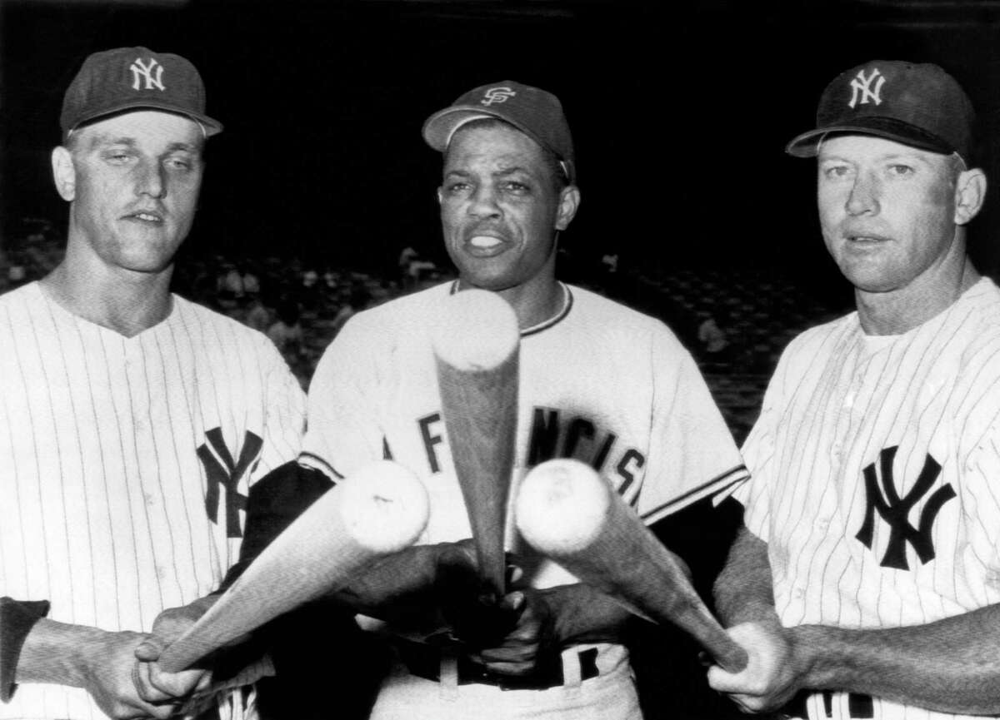

paragraph Major League Baseball is a professional baseball organization and the oldest major professional sports league in the world. MLB is composed of 30 total teams, divided equally between the National League and the American League, with 29 in the United States and 1 in Canada.A Civil War hero named Abner Doubleday is often credited with developing the game in 1839, but the real history is older—and more complicated. You may have heard that a young man named Abner Doubleday invented the game known as baseball in Cooperstown, New York, during the summer of 1839.The Cincinnati Red Stockings made their mark as the first openly professional baseball club in 1869.
